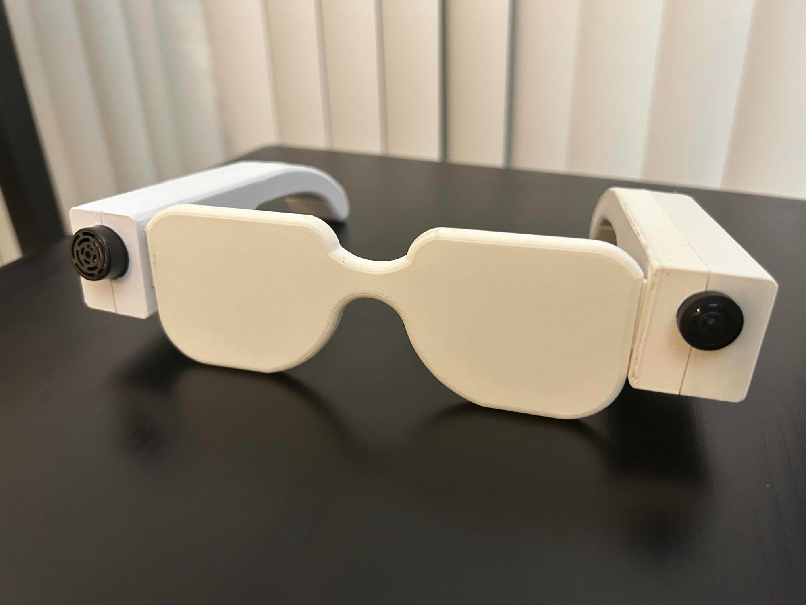

Smart glasses designed to help visually impaired users safely navigate urban environments and cross intersections. The device integrates a camera, ultrasonic sensor, microphone, and haptic motors into a custom 3D printed wearable frame. I led the mechanical design of all housing components in SolidWorks.
Problem
Visually impaired pedestrians face significant hazards in urban environments. Traditional white canes can't detect objects outside immediate range, and existing smart glasses have high costs and can't measure distance. The goal was a compact, wearable device that communicates spatial information through haptic feedback while keeping the user's hands and remaining senses free.
Frame & temple design
Designed the full frame and temple assembly in SolidWorks, including the O-frame lens housing, left and right temple outer and inner pieces, and square end cap components. Each temple was designed to house a sensor module — the left temple integrates the camera, the right temple houses the ultrasonic sensor — with a haptic motor embedded in each temple tip. Materials were PLA for the frame and ABS for the temples to balance rigidity and printability.
 images/project-glasses-hero.jpg
images/project-glasses-hero.jpg
Component integration
Each temple was designed around its embedded components — the left temple houses the camera module with a precision cutout and snap fit retention, while the right temple holds the ultrasonic sensor flush with the outer face. Haptic motors are recessed into the temple tips with wire routing channels molded directly into the inner pieces, keeping the assembly clean and manufacturable.
GD&T & technical drawings
Produced GD&T-compliant SolidWorks drawings for every component, including the O-Frame, left and right temple inner and outer pieces, square end cap, and Jetson Nano housing. Drawings used ASME Y14.5 tolerancing with all dimensions in inches. Parts were 3D printed through iterative prototyping, with minor fit corrections addressed between builds.

images/project-glasses-cad.jpgResults
Successfully integrated all four sensor modalities into a balanced, wearable frame. The final prototype demonstrated closed-loop obstacle detection and crosswalk navigation using the full sensor suite, collaborating with five interdisciplinary engineers across hardware, software, and electrical systems.